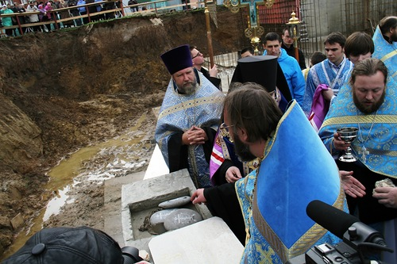
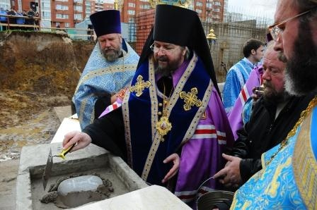
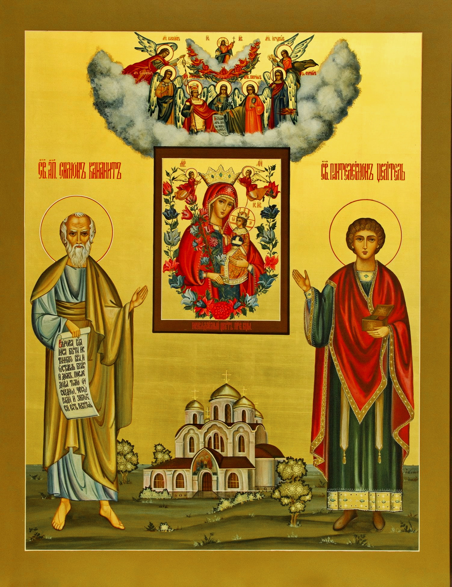

18 12 2011 (1973 дня 5 часов назад)
В Освящении закладного камня на месте строительства Введенского собора в районе Южное Бутово был камень из Абхазии , окраплённый кровью Святого Апостола Симона Кананита с источника (место кончины Святого) . Камень был привезён неким паломником и передан в дар настоятелю Храма Рождества Христова в Чернево (Южное Бутово) о.Игорю, который сразу предложил "давай я его заложу в основание строящегося храма Введения Богородицы"
Введения во храм Пресвятой Богородицы в районе Бутово. Преосвященным Иринархом была освящена закладка камня.
Светоподательный светильнике Трисолнечнаго Света являешися верным, апостоле Христов Симоне, и всех нас невидимо озаряеши на пути доброделания христианскаго, да не падем в сеть врага, диавола, но невредимы пребудем от всех его ловлений лукавых и тако неосужденно возможем вопити тебе: Радуйся, пастырю добрый словеснаго стада Христова; Радуйся, не попускаяй волку душегубительному расхитити духовную паству твою. Радуйся, мрежею проповеди твоея мира концы уловивый во спасение; Радуйся, и ныне способствуяй нашему спасению молитвами твоими. Радуйся, архитектоне премудрый Церкве Христовы; Радуйся, каменю краеугольный ея основания. Радуйся, Симоне, апостоле Христов и молитвенниче о душах наших.

Введения во храм Пресвятой Богородицы в районе Бутово. Преосвященным Иринархом была освящена закладка камня.

Икос 11
Светоподательный светильнике Трисолнечнаго Света являешися верным, апостоле Христов Симоне, и всех нас невидимо озаряеши на пути доброделания христианскаго, да не падем в сеть врага, диавола, но невредимы пребудем от всех его ловлений лукавых и тако неосужденно возможем вопити тебе: Радуйся, пастырю добрый словеснаго стада Христова; Радуйся, не попускаяй волку душегубительному расхитити духовную паству твою. Радуйся, мрежею проповеди твоея мира концы уловивый во спасение; Радуйся, и ныне способствуяй нашему спасению молитвами твоими. Радуйся, архитектоне премудрый Церкве Христовы; Радуйся, каменю краеугольный ея основания. Радуйся, Симоне, апостоле Христов и молитвенниче о душах наших.
